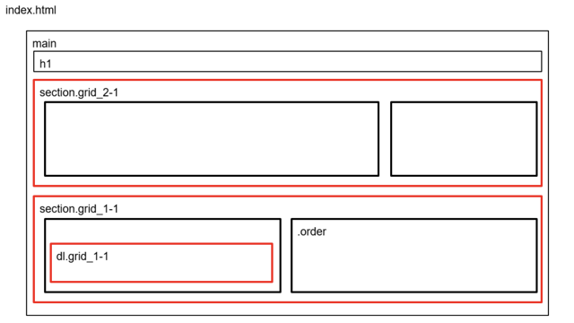
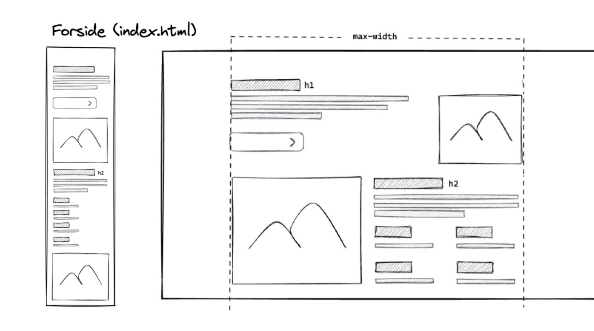
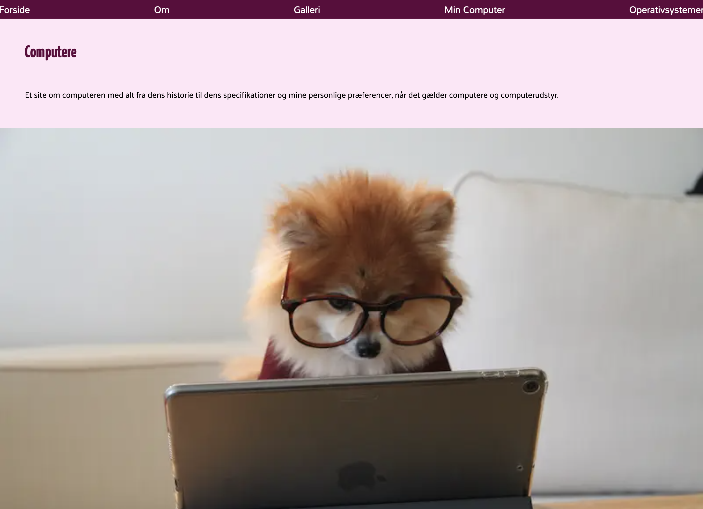
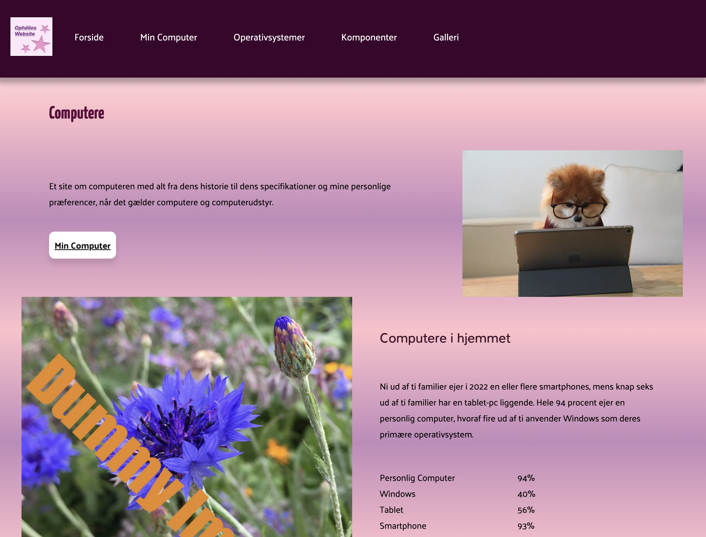

Tema 2
Tema 2, som startede fra anden uge på studiet, lærte jeg om basale designprincipper, HTML og CSS. I slutningen af temaet afleverede jeg opgaven "Mobilsite", som var en hjemmeside designet ud fra mobile-first princippet. Derefter skulle jeg bygge videre på hjemmesiden, så den blev responsiv. Dette skulle aflveres som studiestartsprøven.
Løsning
Her kan du se hjemmesiden mobilsite:
MobilsiteHer kan du se studiestartsprøven:
StudiestartsprøveProces
Jeg fik udleveret en zipfil samt wireframes og layoutdiagrammer af underviserne, der skulle downloades. Derefter gennemgik vi fælles hvordan hjemmesiden skulle styles med CSS.
Layoutdiagram
Wireframe
Mobilsite
Studiestartsprøve
Hvad har jeg lært?
På tema 2 lærte jeg om HTML og HTML struktur, dertil lærte jeg også en smule styling i CSS. Dét der var fokus på i starten var basale CSS styles, såsom grid, flex, media queries, fonter, farver. Jeg lærte også om grundlæggende designprincipper herunder gestaltlove, typografi og kontraster. Vi analyserede stil og genre på en valgt hjemmeside, til det lærte jeg også at bruge Figma. I Figma designede jeg også mit første logo i forbindelse med studiestartsprøven.
Proces
Her kan du se hele designprocessen i Figma:
Designproces i Figma
Her kan man se nogle billeder fra hjemmesiden bla bla
Hvad har jeg lært?
Her lærte jeg at
Tema 4
På tema 2 bla bla
Løsning
Jeg sartede først ud med
Proces
Her kan man se nogle billeder fra hjemmesiden bla bla
Hvad har jeg lært?
Her lærte jeg at
Tema 5
På tema 2 bla bla
Løsning
Jeg sartede først ud med
Proces
Her kan man se nogle billeder fra hjemmesiden bla bla
Hvad har jeg lært?
Her lærte jeg at